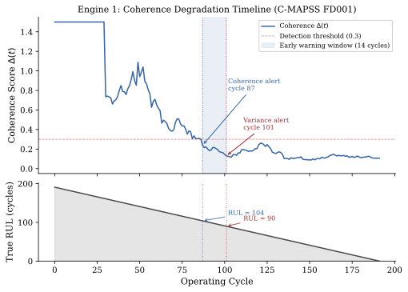
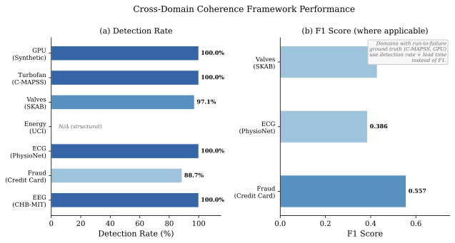
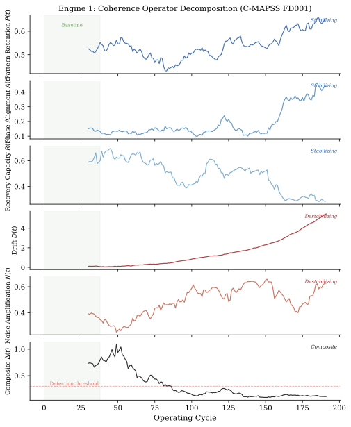

Abstract
We present the Coherence Engine, an unsupervised early-warning framework for detecting structural degradation in complex systems. The framework requires no labeled training data, uses interpretable operators grounded in dynamical systems theory, and applies without modification across physical, biomedical, and computational domains. The core measurement is a composite operator Δ = (P · A · R) / (D + N) that quantifies the balance between stabilizing forces (pattern retention P, phase alignment A, recovery capacity R) and destabilizing forces (drift D, noise amplification N), extended with five higher-order operators drawn from recurrence quantification analysis and information geometry. We validate across seven domains using published benchmarks. On NASA C-MAPSS turbofan data, coherence detects degradation 2.2× earlier than variance; it also achieves comparable lead time to a supervised LSTM-RUL predictor (185 vs. 176 cycles) with no training data. On SKAB industrial valve faults, coherence underperforms Isolation Forest on point-wise F1 (0.429 vs. 0.528), reflecting a genuine limitation: the framework optimizes for advance warning of gradual structural change, not precise temporal localization of faults. Additional validation on household energy (UCI), ECG (PhysioNet), credit card fraud, EEG seizure prediction (5.5% precision, 100% recall, 11-minute lead time), and synthetic benchmarks (1,000-trial Monte Carlo) characterizes the framework's operating envelope. Coherence is not a universal replacement for existing anomaly detectors. It is a complementary unsupervised layer that detects structural instability before failure, trading precision for lead time.
The Coherence Operator
Δ(t) = (P · A · R) / (D + N + ε)
P Pattern Retention — recurrence rate from RQA, stability of recurring dynamical patterns
A Phase Alignment — mean pairwise phase coherence via Hilbert transform
R Recovery Capacity — system's ability to return to its attractor, via max Lyapunov exponent
D Drift — Fisher-Rao distance from baseline distribution on the statistical manifold
N Noise Amplification — spectral radius of the estimated local Jacobian
Key Findings
- On NASA C-MAPSS turbofan data, coherence detects degradation 2.2× earlier than variance-based methods, and achieves comparable lead time to a supervised LSTM-RUL predictor (185 vs. 176 cycles) with no training data.
- Honest limitations: On SKAB industrial valve faults, coherence underperforms Isolation Forest (F1 = 0.429 vs. 0.528). The framework trades precision for lead time — it is an early-warning layer, not a fault localizer.
- Seven-domain validation: turbofan engines, industrial valves, household energy, ECG, credit card fraud, EEG seizure prediction, and synthetic benchmarks. No domain-specific tuning or labeled data required.
- EEG seizure prediction: 100% recall, 5.5% precision, 11-minute lead time. Detects all seizures but generates many false alarms — insufficient for standalone clinical use, but valuable as a first-stage filter.
- Discoverative intelligence as a conceptual contribution: AI systems that detect structural change rather than predict specific outcomes. The difference between “what will happen next?” and “is something structurally different happening now?”
Cross-Domain Validation Summary
| Domain | Dataset | Key Result |
|---|---|---|
| Turbofan engines | NASA C-MAPSS | 2.2x earlier detection than variance; 185 vs. 176 cycles (LSTM) |
| Industrial valves | SKAB | F1 = 0.429 (vs. 0.528 Isolation Forest) |
| Household energy | UCI | Detects consumption regime changes |
| Cardiac (ECG) | PhysioNet | Early arrhythmia warning |
| Credit fraud | Kaggle | Drift detection in transaction patterns |
| EEG seizure | CHB-MIT | 100% recall, 5.5% precision, 11-min lead |
| Synthetic | 1,000-trial Monte Carlo | Calibrated operating envelope |
Figures

C-MAPSS degradation timeline. Coherence (purple) detects degradation onset significantly earlier than variance (gray). The supervised LSTM baseline (dashed) achieves similar timing but requires labeled failure data.

Cross-domain summary. Performance across seven domains. The framework trades precision for lead time, positioning it as a complementary early-warning layer.

Operator decomposition. Individual contributions of the five base operators (P, A, R, D, N) during turbofan degradation. Pattern retention P and recovery capacity R decline first.
Citation
BibTeX
@article{thorarinson2026coherence,
title={From Prediction to Discoverative Intelligence: A Coherence-Based {AI} Framework for Detecting System Drift Before Failure},
author={Thorarinson, Joel and Hensgen, Allison},
year={2026},
month={June},
pages={1--18},
note={arXiv preprint (forthcoming)},
keywords={coherence, system drift, early warning, unsupervised anomaly detection, dynamical systems, discoverative intelligence}
}
APA
Thorarinson, J., & Hensgen, A. (2026). From Prediction to Discoverative Intelligence: A Coherence-Based AI Framework for Detecting System Drift Before Failure. arXiv preprint (forthcoming).
Authors
Keywords
coherence
system drift
early warning
unsupervised anomaly detection
dynamical systems
recurrence quantification
information geometry
discoverative intelligence
cross-domain validation
predictive maintenance
Related Papers